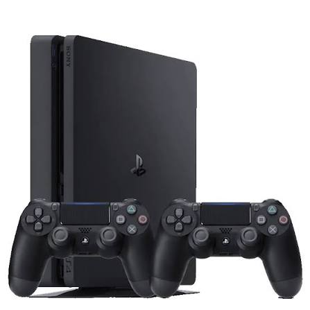
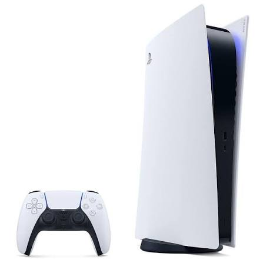

A Geração de todos os Consoles da Sony
PlayStation 1:

O PlayStation 1 (PS1) foi um console de videogame desenvolvido pela Sony e lançado no Japão em 1994, chegando a outros países nos anos seguintes. Ele se tornou um dos consoles mais populares da história e ajudou a transformar a Sony em uma das principais empresas do mercado de videogames.
PlayStation 2:

O PlayStation 2 (PS2) foi um console desenvolvido pela Sony e lançado no Japão em 2000. Ele foi o sucessor do PlayStation 1 e se tornou um dos consoles de maior sucesso da história, Com seus gráficos em 3D, grande biblioteca de jogos e recursos multimídia
PlayStation 3:

O PlayStation 3 (PS3) foi um console desenvolvido pela Sony e lançado em 2006. Ele foi o sucessor do PlayStation 2 e trouxe avanços importantes em gráficos, processamento e recursos online. O PS3 utilizava discos Blu-ray para os jogos, oferecendo muito mais espaço de armazenamento do que os DVDs. Também possuía acesso à internet por meio da PlayStation Network
PlayStation 4:

O PlayStation 4 (PS4) foi um console desenvolvido pela Sony e lançado em 2013. Ele foi o sucessor do PlayStation 3 e trouxe melhorias significativas em gráficos, desempenho e recursos online. O PS4 utiliza discos Blu-ray e permite a compra e o download de jogos pela internet através da PlayStation Store. O console também possui recursos de streaming, compartilhamento de conteúdo e jogos online.
PlayStation 5:

O PlayStation 5 (PS5) é um console desenvolvido pela Sony e lançado em 2020. Ele é o sucessor do PlayStation 4 e foi criado para oferecer uma experiência de jogos mais rápida e avançada. O PS5 possui gráficos em alta resolução, suporte a 4K, carregamentos muito mais rápidos graças ao SSD e recursos como ray tracing e o controle DualSense, que oferece vibração háptica e gatilhos adaptáveis.
Os Consoles Portateis:
PlayStation Portatil:

O PlayStation Portable (PSP) foi um console portátil desenvolvido pela Sony e lançado em 2004, no Japão. Ele foi criado para levar a experiência do PlayStation para dispositivos portáteis.
PlayStation Vita

O PlayStation Vita (PS Vita) foi um console portátil desenvolvido pela Sony e lançado em 2011, no Japão. Ele foi o sucessor do PSP e trouxe uma experiência portátil mais avançada, com gráficos melhores e novos recursos de interação.
PlayStation Portal:

O PlayStation Portal é um dispositivo portátil desenvolvido pela Sony e lançado em 2023. Diferente do PSP e do PS Vita, ele não é um console portátil tradicional, pois foi projetado principalmente para transmitir jogos de um PlayStation 5 por meio do recurso Uso Remoto (Remote Play).
Playstation 5 PRO:
 O PlayStation 5 Pro (PS5 Pro) é uma versão mais potente do PlayStation 5, desenvolvida pela Sony e lançada em 2024. Ele foi criado para oferecer melhor desempenho gráfico e uma experiência visual mais avançada em relação ao PS5 original.
O PlayStation 5 Pro (PS5 Pro) é uma versão mais potente do PlayStation 5, desenvolvida pela Sony e lançada em 2024. Ele foi criado para oferecer melhor desempenho gráfico e uma experiência visual mais avançada em relação ao PS5 original.
Playstation 4 Pro:
 O PlayStation 4 Pro (PS4 Pro) é uma versão mais potente do PlayStation 4, desenvolvida pela Sony e lançada em 2016. Ele foi criado para oferecer melhor desempenho e qualidade gráfica em comparação ao PS4 original.
O PlayStation 4 Pro (PS4 Pro) é uma versão mais potente do PlayStation 4, desenvolvida pela Sony e lançada em 2016. Ele foi criado para oferecer melhor desempenho e qualidade gráfica em comparação ao PS4 original.
Os melhores consoles da Sony.